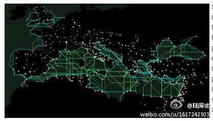
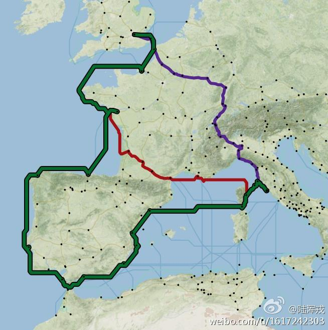
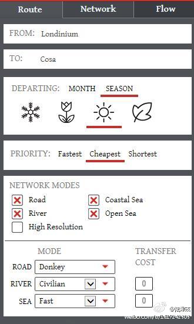

偶然发现一本叫《品藏》的杂志（网页链接）。非常诡异的一本杂志。好像主打的是雅的小资路线，给读者介绍很多古代的工艺品和艺术知识。杂志装帧非常淡雅，给人高大上的感觉。不由奇怪，国内的什么人群喜欢看这样的杂志呢？有人了解吗？
转发微博@陆浑戎:#网洋撷英# 之3D全景虚拟：云冈石窟，百度百科震撼推出全景数字博物馆——云冈石窟，3D虚拟实景带你穿越千年，大家感受一下！；莫高窟，网页链接 ；响堂山石窟，网页链接 ；居庸关全景图#，网页链接 ；360紫禁城， 360紫禁城全景虚拟漫游 ；360DAP，360° Aerial Panorama, 3D Virtual Tours Around the World, Photos of the Most Interesting Places on the Earth ；数字京都，网页链接 视觉盛宴，挥之即来，欢迎补充
转发微博@陆浑戎:加州大学伯克利分校东亚图书馆，#Ann Tompkins (Tang Fandi) and Lincoln Cushing Chinese Poster Collection#，513笔，每笔有简要说明，图片使用需授权，网页链接
赞啊，这个罗马城3D复原，真的像回到两千年前的罗马一样！ //@陆浑戎:3D也有啦 //@刘津渝:3D的有Rome Reborn 网页链接 今年我们的考古地Herculaneum也已做成多个3D模型。附上一个罗马房屋3D复原录像3D 古罗马房屋@陆浑戎:高大上的#穿越#，斯坦福大学，#Orbis: The Stanford Geospatial Network Model of the Roman World#，让使用者能够体验在罗马帝国旅行的种种细节。该系统融合了跨三大洲的罗马帝国的城镇、道路、河流、关隘、区划等信息，直观而详细地展示帝国内两地之间的旅行路线和费用，网页链接 
西方学者认为印度河流域文明（网页链接）在4000年前衰落，而印欧语系的雅利安人迁移到印度，成了印度人和印度文化的主体，直到现在。但是印度学者很多并不认可这种说法，坚持印欧语系源于印度，是从那里迁移到了欧亚大陆的其他地方（）。听着是不是有点似曾相识？
 网页链接）。非常诡异的一本杂志。好像主打的是雅的小资路线，给读者介绍很多古代的工艺品和艺术知识。杂志装帧非常淡雅，给人高大上的感觉。不由奇怪，国内的什么人群喜欢看这样的杂志呢？有人了解吗？
网页链接）。非常诡异的一本杂志。好像主打的是雅的小资路线，给读者介绍很多古代的工艺品和艺术知识。杂志装帧非常淡雅，给人高大上的感觉。不由奇怪，国内的什么人群喜欢看这样的杂志呢？有人了解吗？